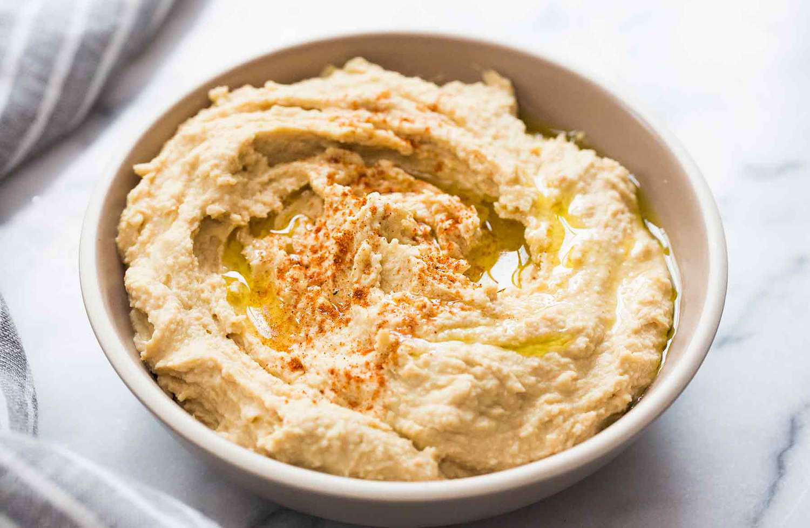

Homemade Hummus

Surpisingly quick and easy hummus recipie
Ingredients
- Sesame Seeds
- Olive Oil
- Chickpeas
- Salt
- Smoked Paprika
- Cumin
- Lemon Juice
Steps
- Boil (or slow cook) dried chickpeas for at least 1hr 20 mins.
- Toast sesame seeds on a frying pan till brown.
- Puree toasted seeds and olive oil -- with salt to taste. Once satisfied with consistency, you can stop and store as Tahini!
- Add chickpeas, cumin, lemon juice, and paprika.
- Add salt if too flavourless, chickpeas if too liquidy, olive oil if dry.